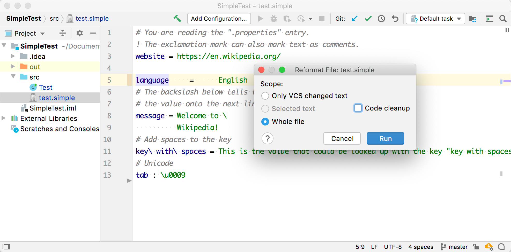

15. Formatter
The Consulo includes a powerful framework for implementing formatting for custom languages. A formatter enables reformatting code automatically based on code style settings. The formatter controls spaces, indents, wrap, and alignment.
Reference: Code Formatter
- bullet list {:toc}
15.1. Define a Block
The formatting model represents the formatting structure of a file as a tree of Block objects, with associated indent, wrap, alignment and spacing settings.
The goal is to cover each PSI element with such a block.
Since each block builds its children's blocks, it can generate extra blocks or skip any PSI elements.
Define SimpleBlock based on AbstractBlock.
{% include /code_samples/simple_language_plugin/src/main/java/org/intellij/sdk/language/SimpleBlock.java %}
15.2. Define a Formatting Model Builder
Define a formatter that removes extra spaces except for the single spaces around the property separator. For example, reformat "foo = bar" to "foo = bar".
Create SimpleFormattingModelBuilder by subclassing FormattingModelBuilder.
{% include /code_samples/simple_language_plugin/src/main/java/org/intellij/sdk/language/SimpleFormattingModelBuilder.java %}
15.3. Register the Formatter
The SimpleFormattingModelBuilder implementation is registered with the Consulo in the plugin configuration file using the com.intellij.lang.formatter extension point.
<extensions defaultExtensionNs="com.intellij">
<lang.formatter language="Simple"
implementationClass="org.intellij.sdk.language.SimpleFormattingModelBuilder"/>
</extensions>
15.4. Run the Project
Add some extra spaces around the = separator between language and English.
Reformat the code by selecting Code | Show Reformat File Dialog and choose Run.
